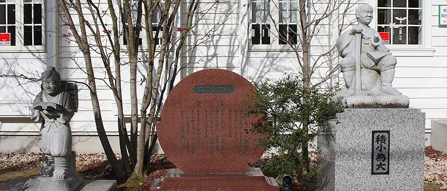
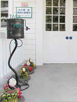
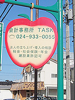

会計事務所TASKは、お客様にとって最も身近な、何でも相談できる、温かいぬくもりを感じていただける人間性豊かな、若さあふれる集団です。
◆基本理念は、「感謝」「情熱」「挑戦」そして「努力」です。
「感謝」・・・感謝する素直な心
「情熱」・・・情熱ある熱き心
「挑戦」・・・挑戦する前向きな心
こつこつとひたむきに「努力」する心
そして、こつこつとひたむきに「努力」する心の４つの心を大切にして、縁ある人達に、幸を運ぶ「幸運人」となる。
会計事務所TASKは、お客様にとって最も身近な、何でも相談できる、温かいぬくもりを感じていただける人間性豊かな、若さあふれる集団です。
税務（全件電子申告しております）・会計はもちろんのこと、会社・経理の立上げ、決算対策・節税対策、決算診断、借入相談（必要とあれば、金融機関に同行いたします）、相続・贈与税申告、労務・社会保険・給与計算、建設業等許可、保険の見直しなど、なんでも相談させていただきます。
ご縁ができました、県外・遠隔地のお客様も資料の郵送・メール等で対応させていただいております。
私達は、お客様に最高の満足と感動を提供し続けます。
その為に、お客様の要望を常に受信、それを満足・感動に転化できる様に日々、意識改革をし、精進・進化し続けてまいります。
猪苗代町上戸出身／法政大学 経済学部卒業
男性12名、女性18名 合計30名、20代、30代中心のスタッフで、TASKのご提供業務を通して、お客様の「経営の元氣」をサポートさせていただいております。



民報サロンで‥‥
福島民報の民報サロン 第129期・6回シリーズで執筆させていただきました。
この4ヶ月間、自分が社会人になってから現在迄の歩みを総括でき、これからの自分の未来に対する決意を、紙面の中で表現できたこと、筆舌に尽くしがたいです。
もう一度、6回執筆した原稿をひもといて読んでみると、たくさんの人達に支えられての今なんだ、どんなにか、今の自分が最高の境遇の中で生き、過ごしていられるか「幸」を肌で感じ、感謝・感謝・感謝・・・
頭が自然と下がります。これからも、執筆した内容に恥じない「大川原 隆」であり続け精進してまいります。ご指導宜しくお願い致します。
いっぱい いっぱい 感謝・・・
月刊ベストファーム編集部 榊原 陸 様の取材より・・・・・
経営、会計のサポートをするエキスパートを目指したい方。
経理が大好き、もっと極めたい方。
元氣いっぱい、笑顔いっぱいの方…etc。
ありがとうございます。私は仕事を通して、あったかい人間性豊かな人達が集う職場、そこには笑顔とありがとうの花が咲き満開、光り輝いている、そんなイメージを持っています。
２１世紀は女性が社会で活躍する時代、個性豊かなたくさんの女性の人達が会計事務所ＴＡＳＫで活躍している。これがＴＡＳＫの未来です。
結婚しても、お子様が誕生しても、全力でバックアップサポートしていきたい。全ての働く人が、物・心、両面で豊かで幸を感じられる・・・私が命をかけても守りたい！
一緒に最高の人生未来を創っていきましょう！
会計事務所 TASK 代表・税理士 大川原 隆
記帳代行、月次試算表、決算関係書類の作成／お客様訪問、税務会計監査、経理サポート
給与計算・年度更新・算定基礎届・建設業許可等の書類作成アシスタント
電話応対、来客の案内、接客／請求書発行／所内書類管理・整理
税務会計スタッフ（内勤）
① お客様からの会計資料に基づき、記帳代行、月次試算表、決算関係書類の作成
② その際に生じるお客様の書類の管理、整理等
（外勤）上記①②の業務に加えて、お客様との契約に基づき、お客様訪問、臨場して税務会計監査、経理サポート
行政書士・社会保険労務士のアシスタント（内勤）
◎行政書士・社会保険労務士業に関する書類作成のアシスタント 主に給与計算・年度更新・算定基礎届・建設業許可等の書類作成アシスタント
官公庁への書類提出などの外出用務もあり(社用車使用）
受付スタッフ（内勤）
電話応対、来客の案内、接客／請求書発行／所内書類管理・整理
税務会計スタッフ
月給 25万円～40万円(業務手当含む) (年収350万円～600万円程度)
通勤手当 (上限あり)実費2万円／所内マイカー通勤駐車場(無料)有り
家賃補助手当 基本的には、一律 2万5千円
インセンティブ手当、特別業務等売上の20％還元
行政書士・社会保険労務士のアシスタント
月給 25万円～35万円(業務手当含む) (年収350万円～500万円程度)
通勤手当 (上限あり)実費2万円／所内マイカー通勤駐車場(無料)有り
家賃補助手当 基本的には、一律 2万5千円
受付スタッフ
月給 25万円～35万円（業務手当含む） (年収350万円～500万円程度)
通勤手当 (上限あり)実費2万円／所内マイカー通勤駐車場(無料)有り
家賃補助手当 基本的には、一律 2万5千円
給与.手当の決定. 求職者の前職の給与､希望給与を考慮し､面談により決定します。
昇給. 昨年実績 年1回 月額1万円
賞与. 昨年実績 7月と12月.年2回 30万円～150万円
雇用形態. 正社員 雇用期間の定め無し 試用期間14日
年齢制限あり. 40才以下(長期勤続によるキャリア形成の為。応相談。)
学歴. 不問
必要な経験等. 特に不問 喫煙者はＮＧです。
必要なＰＣスキル. ワード・エクセル
必要な免許等. 普通自動車運転免許のみです。
就業時間. AM8：00 ～ PM5：00 (昼休 AM11：30～PM12：30)
氣分転換Time. 各自適宜 AM 5分. PM 5分. 有り
残業時間. 受付スタッフはPM5：00 に帰宅可能
税務会計スタッフは、繁忙期.1.2.3.5月は1人平均多くて20時間、それ以外の月は、PM5：00に帰宅可能です。しっかり自分の時間取れます。
週休2日制. (事務所カレンダーによる。土曜出勤日は事務所より、昼食弁当支給、残業時は希望者に軽食とお茶の提供。)
社会保険の全てを完備、年1回の健康診断と、インフルエンザ予防接種は、事務所負担です。
履歴書郵送下されば、担当 斎藤 甚一（サイトウジンイチ）室長が、ご連絡差し上げます。宜しくお願い致します。
「感 謝」